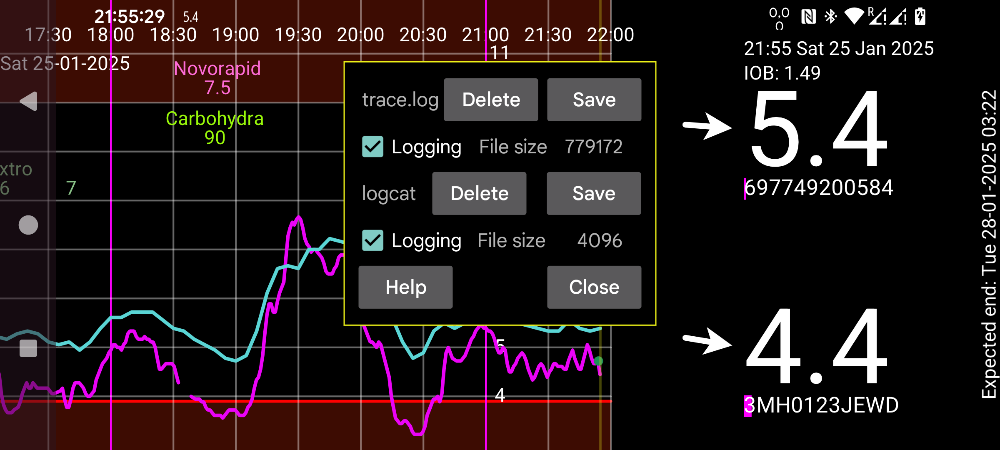
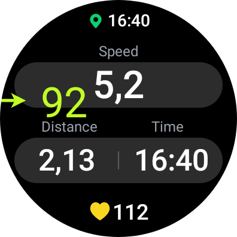
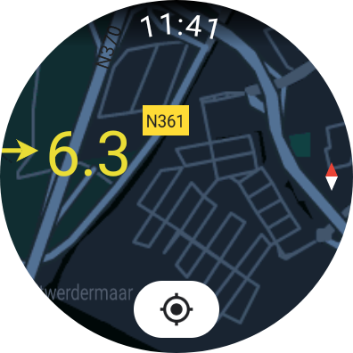
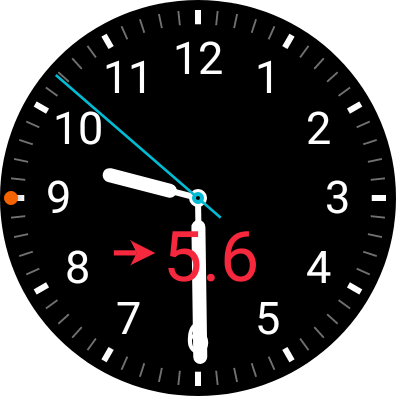

When touching the Google Drive link on a phone, it is possible that it hangs. In that case long press the link and select “Open in new tab”, go to the new tab and press download, “Download anyway” etc. Thereafter, go in the file manager to the download directory and press the downloaded apk to install.
Bug fix
Previous versions (under Android not all is shown in Google Drive App or Chrome, except when "Desktop site [x]" is set)
Installing the apk will update the existing app. If adb refuses to install the APK, because the app is already installed, you can use the -r option. If it refuses because it is a downgrade, you also need to add the -d option. When you have installed the Google Play version, you first need to install the debuggable version before you can downgrade
Arm64 only (the usual case): Google Drive, Older versions: AppGallery
Arm/Arm64/x86/x86_64 (for the emulator or atypical devices): Google Drive, Uptodown
Arm32 only: Google Drive
Arm/Arm64/x86/x86_64: Google Drive
Arm32 only (the usual case): Google Drive
Arm/Arm64/x86/x86_64 (for the emulator or atypical devices): Google Drive
Watch Face
Works also under WearOS 4
Arm32 only (the usual case): Google Drive
Arm/Arm64/x86/x86_64 (for the emulator or atypical devices): Google Drive
If you have a serious bug. For example Juggluco doesn't work with a certain type of sensor or crashes, it would be helpful to generate more information about the problem.
For this you can install a logging version of Juggluco:
You can just install the logging mobile phone version as any other apk. In left menu→Settings→Logging you can go to a view in which you can turn on and off logging, delete the log files and save the
log files to a file so you can e-mail the log file to me.

The WearOS version you need to install with adb, see Adb
To get the log file out of the device you also need adb:
adb shell run-as tk.glucodata cat /data/data/tk.glucodata/files/logs/trace.log > trace.log
and E-Mail trace.log to me.
You can remove the log file with:
adb shell run-as tk.glucodata rm /data/data/tk.glucodata/files/logs/trace.log
Thereafter you can install an old version of Juggluco without these problems.
When your Juggluco installation consistently crashes or misbehaves in another way, you can also save the data of you installation directory and send it to me. If you use the Google Play version, you first need to install a debugging version of Juggluco from this page. You need to have adb installed. Then you do the following command:
adb exec-out run-as tk.glucodata tar -cf - ./files > all.tar
and e-mail all.tar to me.
To use Floating Glucose under Android Automotive and WearOS you need to give Juggluco permission to display over other apps with the following command:
adb shell pm grant tk.glucodata android.permission.SYSTEM_ALERT_WINDOW
It is also possible to give Juggluco all permissions it uses during install with:
adb install -g -r Juggluco5.1.14-wear-arm32.apk
Were Juggluco5.1.14-wear-arm32.apk is the current WearOS APK you downloaded from:
https://www.juggluco.nl/Juggluco/download.html
-g means that you grant all permissions.



Old versions of Juggluco for Android can be found at APKPURE. You can only install an update of an Android app when signed with the same key as the installed version. All versions I have distributed (via Google Play and this page) are signed with the same key.
If you ever want to update
to Juggluco with a lower version number do the following:
First upgrade to the (nonworking) debug version with:
adb install -r debugAPK
then you can downgrade to whatever version of Juggluco you want with:
adb install -d -r releaseAPK
An examplar of Juggluco with a different Application ID can be used to run two exemplars of Juggluco on the same phone to be able to represent data of two persons.
Juggluco can be used with Freestyle Libre 1, US 14 Days FreeStyle Libre 1, FreeStyle Libre 2, US/CA/AU FreeStyle Libre 2 and FreeStyle Libre 3 sensors. I can impossibly wear all these sensors at the same time and small changes can make that some of these sensors don't work anymore with Juggluco. So there is a large need for people who test Juggluco. If you want to test an APK send an E-Mail to jaapkorthalsaltes@gmail.com